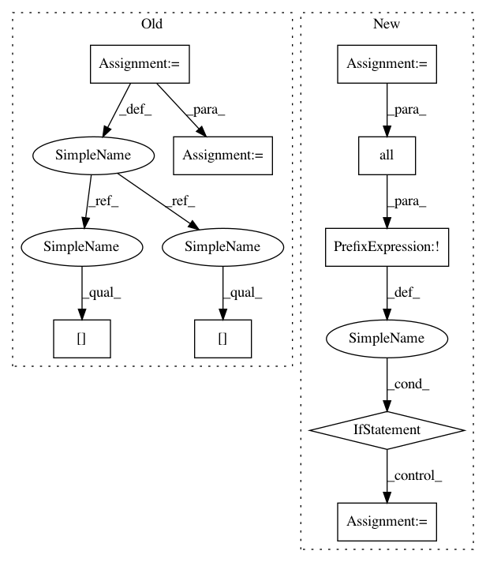

1d6771befb95f4ae94f308899633294a003dcfd6,src/fonduer/utils/data_model_utils/structural.py,,lowest_common_ancestor_depth,#,188
Before Change
spans = [_to_span(i) for i in c]
ancestors = [np.array(span.sentence.xpath.split("/")) for span in spans]
min_len = min([a.size for a in ancestors])
arrays = np.array([a[:min_len] for a in ancestors])
arg_min = np.argmin(arrays[:-1] == arrays[1:], axis=1)
val = np.min(arg_min[np.nonzero(arg_min)])
return min_len - val
After Change
spans = [_to_span(i) for i in c]
ancestors = [np.array(span.sentence.xpath.split("/")) for span in spans]
min_len = min([a.size for a in ancestors])
ancestor = ancestors[0]
ind = 0 // all the ancestors are common up to this index (exclusive).
while ind < min_len:
if not all([a[ind] == ancestor[ind] for a in ancestors]):
break
ind += 1
return min_len - ind
In pattern: SUPERPATTERN
Frequency: 3
Non-data size: 9
Instances
Project Name: HazyResearch/fonduer
Commit Name: 1d6771befb95f4ae94f308899633294a003dcfd6
Time: 2020-07-24
Author: hiromu.hota@hal.hitachi.com
File Name: src/fonduer/utils/data_model_utils/structural.py
Class Name:
Method Name: lowest_common_ancestor_depth
Project Name: HazyResearch/fonduer
Commit Name: 1d6771befb95f4ae94f308899633294a003dcfd6
Time: 2020-07-24
Author: hiromu.hota@hal.hitachi.com
File Name: src/fonduer/utils/data_model_utils/structural.py
Class Name:
Method Name: lowest_common_ancestor_depth
Project Name: HazyResearch/fonduer
Commit Name: 1d6771befb95f4ae94f308899633294a003dcfd6
Time: 2020-07-24
Author: hiromu.hota@hal.hitachi.com
File Name: src/fonduer/utils/data_model_utils/structural.py
Class Name:
Method Name: common_ancestor
Project Name: jonathf/chaospy
Commit Name: f47485cc4a21fb18564ede7ab0cc9001dbd0f1d9
Time: 2020-06-10
Author: jonathf@gmail.com
File Name: chaospy/descriptives/sensitivity/total.py
Class Name:
Method Name: Sens_t